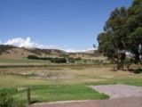

Photo Gallery
The Cuillin Mountains, Isle of Skye, Scotland.
12/24/2000
Alasdair Dougall
Mt. Ruapehu in summer
01/13/2005
Andrew McMillan
midday sun
04/26/2011
Jaycee Barratt

Dark sunset sky tones
03/21/2004
Leon Brooks

Mt. Shasta, Weed, CA
06/16/2004
Brian Lopez
Mountain with tree cover on foothills
09/28/2004
Brian Lopez

Poas Volcano, Caldera and Poor Man's Umbrella
01/02/2004
Nat Edwards

Mt Compas, South Australia
01/01/2007
Rod Conlon
Waterfall on the outskirts of Highlands N.C.
11/21/2008
Neal Floyd